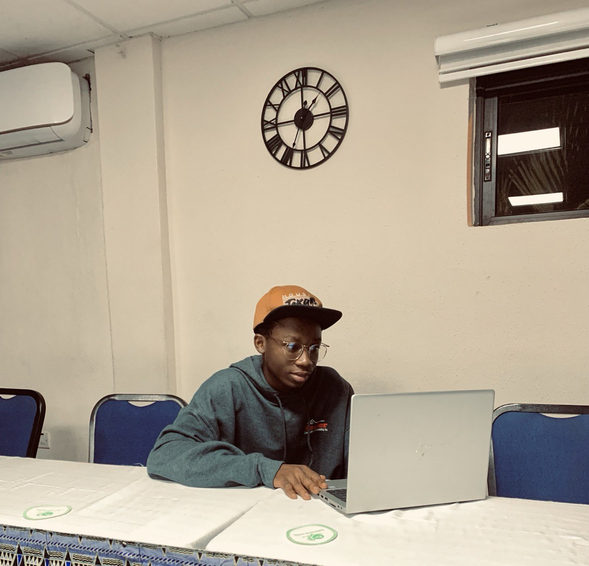

Who Am I?
My name is Kelvin Agbola Kekeli, and I’m a passionate web developer and lifelong learner. My journey into coding started with a spark of curiosity during a high school seminar, and it has grown into a fulfilling career path that I deeply enjoy. Over the years, I’ve honed my skills in languages like HTML, CSS, and JavaScript, and I continue to expand my knowledge every day.
My Mission
I believe coding is more than just a technical skill—it’s a tool for creativity, problem-solving, and innovation. My mission is to use technology to create impactful projects that solve real-world problems while inspiring others to embark on their coding journey.
Why Coding?
For me, coding is like solving a puzzle. Each project presents unique challenges, and I find immense satisfaction in overcoming them. The ability to bring ideas to life and create functional, beautiful designs keeps me motivated to improve and explore new possibilities.
.jpg)
Beyond Coding
When I’m not coding, you’ll find me exploring new technologies, collaborating with like-minded individuals, or engaging in hobbies like reading, photography, and gaming. I value continuous growth and strive to make a positive impact in every aspect of my life.